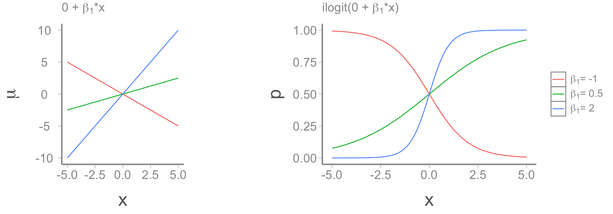
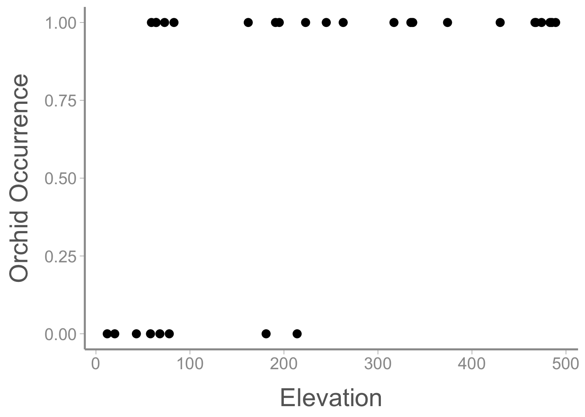
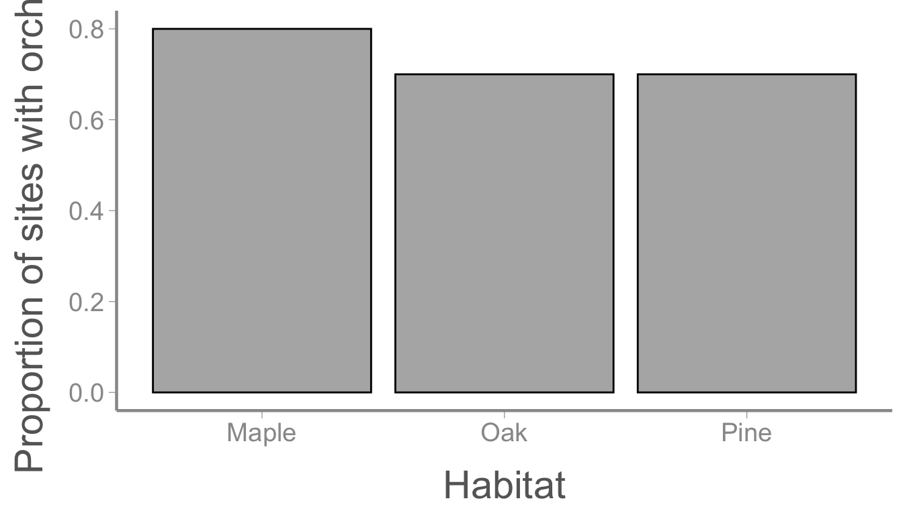
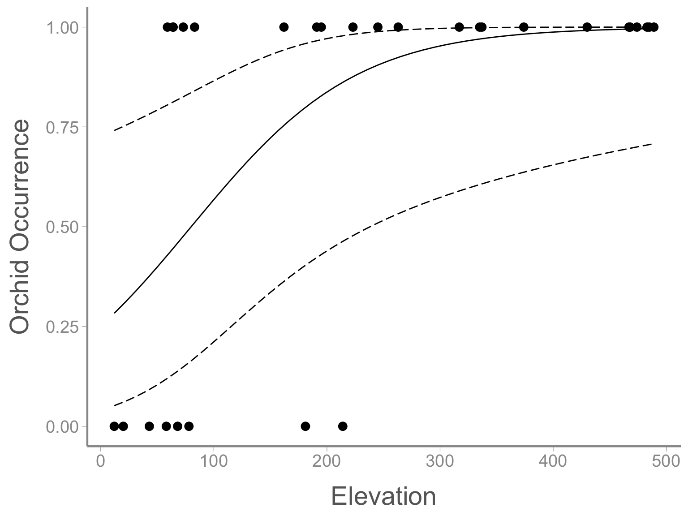
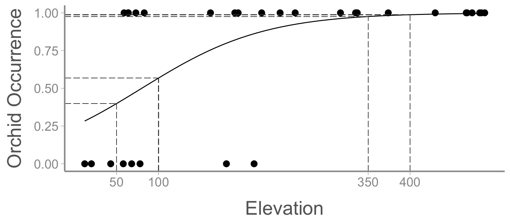

| log odds = log(p/(1-p)) | -2.20 | -1.10 | 0.0 | 1.39 | 4.60 |
| odds = p/(1-p) | 0.11 | 0.33 | 1.0 | 4.00 | 99.00 |
| p | 0.10 | 0.25 | 0.5 | 0.80 | 0.99 |
FANR 6750
Fall 2026
Logistic regression is a specific type of GLM in which the response variable follows a binomial distribution and the link function is (usually) the logit
Logistic regression is used to model a binary response variable as a function of explanatory variables
Examples:
Is presence of a focal species related to habitat type?
Is survival a function of body condition?
Is disease prevalence related to population density?
\[\large y_i \sim Bernoulli(p_i)\]
\[\large log\bigg(\frac{p_i}{1 - p_i}\bigg) = logit(p_i) = \beta_0 + \beta_1x_{i1} + \beta_2x_{i2} + ...\]
where:
\(\large y_i\) is the response (coded as 0/1)
\(\large p_i\) is the probability of success for sample unit i
\(\large \frac{p_i}{1 - p_i}\) is the odds of success
\(\large log\big(\frac{p_i}{1 - p_i}\big)\) is the log odds
The logit link allows us to transform the probability \(p_i\) (constrained to \(0\) to \(1\)) to the real scale ( \(-\infty\) to \(\infty\))
\[\large \log\bigg(\frac{0.5}{1-0.5}\bigg) = log(1) = 0\]
The inverse logit \(\frac{e^\mu}{1+e^\mu}\) allows us to transform the linear predictor to the probability scale
\[\large \frac{e^0}{1+e^0} = \frac{1}{2}\]
The odds ratio \(\frac{p}{1-p}\) varies from \(0\) to \(\infty\) and measures the probability of success relative to the probability of failure
\(1:2\) odds = \(0.33/(1 - 0.33)\) = failure is twice as likely as success
\(4:1\) odds = \(0.8/(1 - 0.8)\) = success if four times a likely as failure
:::
| log odds = log(p/(1-p)) | -2.20 | -1.10 | 0.0 | 1.39 | 4.60 |
| odds = p/(1-p) | 0.11 | 0.33 | 1.0 | 4.00 | 99.00 |
| p | 0.10 | 0.25 | 0.5 | 0.80 | 0.99 |

Imagine we are interested in the effects of elevation and habitat on the probability of occurrence for a rare orchid


glm function| term | estimate | std.error | statistic | p.value |
|---|---|---|---|---|
| (Intercept) | -0.9960 | 1.217 | -0.8184 | 0.4131 |
| habitatOak | -0.0968 | 1.367 | -0.0708 | 0.9436 |
| habitatPine | -0.3372 | 1.382 | -0.2441 | 0.8072 |
| elevation | 0.0137 | 0.006 | 2.2723 | 0.0231 |
| term | estimate | std.error | statistic | p.value |
|---|---|---|---|---|
| (Intercept) | -0.9960 | 1.217 | -0.8184 | 0.4131 |
| habitatOak | -0.0968 | 1.367 | -0.0708 | 0.9436 |
| habitatPine | -0.3372 | 1.382 | -0.2441 | 0.8072 |
| elevation | 0.0137 | 0.006 | 2.2723 | 0.0231 |
The probability of occurrence in maple-dominated forest at sea level = 0.27 (plogis(-0.996))
The probability of occurrence in oak-dominated forest at sea level = 0.25 (plogis(-0.996 - 0.09))
exp(-0.09) = 0.91The probability of occurrence in pine-dominated forest at sea level = 0.21 (plogis(-0.996 - 0.34))
exp(-0.34) = 0.71| term | estimate | std.error | statistic | p.value |
|---|---|---|---|---|
| (Intercept) | -0.9960 | 1.217 | -0.8184 | 0.4131 |
| habitatOak | -0.0968 | 1.367 | -0.0708 | 0.9436 |
| habitatPine | -0.3372 | 1.382 | -0.2441 | 0.8072 |
| elevation | 0.0137 | 0.006 | 2.2723 | 0.0231 |
What about elevation?
First, let’s visualize the fitted relationship

What’s the change in probability of occurrence at 1m vs 0m elevation (in maple habitat)?
plogis(-0.996 + 0.014 * 1) - plogis(-0.996 + 0.014 * 0) = 0.002What’s the change in probability of occurrence at 101m vs 100m elevation ?
plogis(-0.996 + 0.014 * 101) - plogis(-0.996 + 0.014 * 100) = 0.004Change in probability is not linear

Change in probability is not linear.
But the change is odds is
What is the change in odds for one unit change in elevation?
exp(0.014) = 1.0141Logistic regression is used when we want to model a binary response as a function of explanatory variables
The response \(y_i\) is modeled as arising from a Bernoulli distribution with probability \(p_i\) and the logit link is used to map the linear predictor to the probability scale
All of the linear modeling concepts we have learned this semester (continuous/categorical explanatory variables, multiple regression, interactions, random effects) can be used within the logistic regression framework
glmer function in the lme4 packageParameter estimates from the logistic regression measure the change in log odds for one unit change in the explanatory variables
Next time: Poisson regression
Reading: Fieberg chp. 15